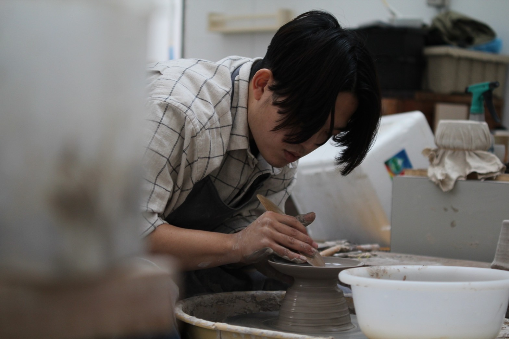
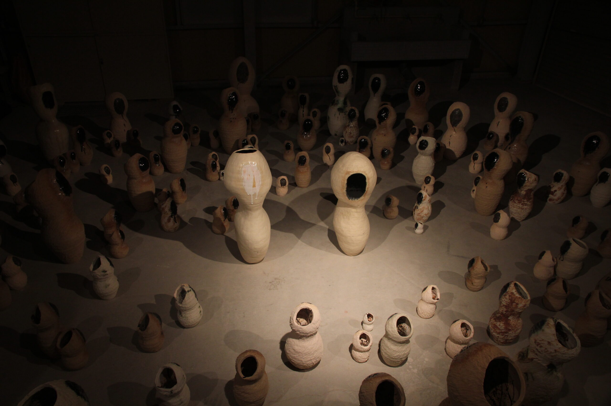

ブリキ缶を用いた日常的な陶器制作から、福島県葛尾村での自立した産業を見据えた活動、三重県伊賀市でのアートスペースのディレクションなど、陶芸を軸としたミクロとマクロの実践を横断し、自分たちの手で「心地よい日々」を立ち上げ、生活そのものを再制作することで、生きている実感の獲得を試みている。

私の陶器制作の中心には、ブリキ缶を窯に転用する焼成方法がある。特別なアトリエや設備を持たず、窯という設備の特権性を問い直し、素材や関係性と身体で向き合うこの方法から、以降の活動が派生している。
陶芸は本来、生活を成立させるために不可欠な営みであった。土を採取し、形を与え、火を通すという行為は、地域や共同体の中で共有される必然的な技術であり、特定の専門家や制度に囲い込まれるものではなかった。しかし現代においては、電気窯や専用設備、制度化された教育環境などに支えられ、制作主体が限定されやすい構造を内包してきた。特に窯という設備は、場所・資金・管理能力を必要とし、制作行為そのものを特権化する装置として機能している。
共同スタジオ「場七」を拠点とした「場七陶芸部」や、福島県葛尾村で村の土から焼き物を立ち上げる「葛尾焼きプロジェクト」、三重県伊賀市の古民家を舞台としたアートスペース「乃 -NANJI-」のディレクションなど、いずれの実践においても、陶器制作を「特定の場所や専門家に閉じた行為」から「関係性の中で共有・更新されるプロセス」として再構成することを試みている。

これらの実践において重視しているのは、参加体験が一過性の消費に留まることなく、長期的な関係性や制作の蓄積へと接続されていく点である。制作行為に伴う負荷や不確定性、失敗の可能性を含めた状態そのものが開示され、体験が消費されるのではなく、関係性や制作環境の蓄積として場に残り続けることに、実践の特徴がある。
作品の完成そのものではなく、人と人の関係性、場所、時間の重なりによって立ち上がる総体的な空間 —— それを「情景」と捉え、意図的に立ち上げる芸術実践を「情景制作」として位置づけている。陶器制作を起点とした情景制作は、かつて生活の必然であった制作行為が、いかにして特権化・商品化されてきたのかを問い直しつつ、陶芸を再び共有可能な行為として位置づけ直す試みである。